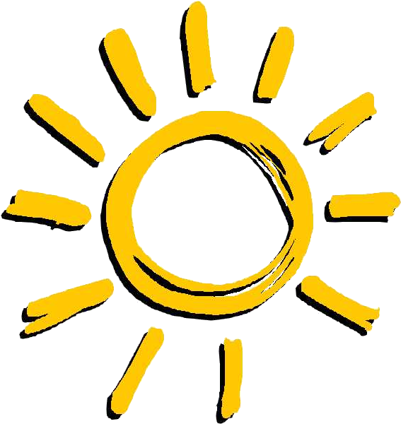

Primavera
 Verano
 Otoño
Otoño
 Invierno
Invierno
Especiales
Cerezo en flor:
Fecha: 1 - 10 de abril.
Durante estas fechas, todos los árboles caducifolios que no tengan frutas cambiarán de color, ya que tendrán pétalos de flores de cerezo, dando un aspecto precioso a nuestra isla. Además, tendremos que estar pendientes, ya que nos podremos encontrar estos pétalos flotando en el aire, y tendremos que recogerlos con nuestra red para poder poder crear nuevos proyectos exclusivos y, además, preciosos y con un toque japonés que nos encanta. Los proyectos que podemos encontrar (tanto en globos como con nuestros vecinos) son:
- Bolsito flor de cerezo.
- Cerezo en flor bonsái.
- Farol flor de cerezo.
- Jarrón con flores de cerezo.
- Paraguas flor de cerezo.
- Pared cerezo.
- Pared cerezos en flor.
- Parqué cerezo.
- Pila de pétalos de cerezo.
- Reloj flor de cerezo.
- Roca con agua y pétalos.
- Set de picnic.
- Suelo cerezos en flor.
- Varita flor de cerezo.
Caza del Huevo:
Fecha: 1 - 12 de abril.
Durante este periodo de tiempo, veremos por la isla a un conejito un tanto curioso, llamado Coti Conejal, que nos dará nuestro primer proyecto del evento y nos contará que vamos a tener que recolectar los distintos tipos de huevos de pascua que hay. Son los siguientes, y aquí os indicamos cómo conseguir cada uno de ellos:

- Acuáticos: pescando.
- Celestes: derribando globos con el tirachinas.
- Terrestres: cavando en el suelo.
- Leñosos: golpeando los árboles con el hacha.
- Rupestres: golpeando las rocas.
- Boscosos: moviendo los árboles en los que aparecen para que caigan.
La idea del evento es ir recolectando todos estos huevos para poder crear proyectos nuevos, que conseguiremos en las botellas que encontramos por la playa una vez al día, en los globos, recogiendo huevos o de nuestros vecinos. Estos proyectos van a ser:

- Alfombra caza del huevo.
- Arco caza del huevo.
- Armario caza del huevo.
- Cama caza del huevo.
- Corona caza del huevo.
- Globo caza del huevo set 1 y 2.
- Guirnalda caza del huevo.
- Guirnalda luz caza del huevo.
- Lámpara caza del huevo.
- Mesa caza del huevo.
- Mochila caza del huevo.
- Pared caza del huevo.
- Reloj caza del huevo.
- Suelo caza del huevo.
- Taburete caza del huevo.
- Tocador caza del huevo.
- Valla caza del huevo.
Finalmente, el día 12 de abril, el último del evento, se celebrará la "Caza del Huevo", donde Coti nos esperará para darnos un proyecto nuevo (siempre que hayamos conseguidos todos los del evento) y, cuando realicemos este, nos dará la “varita Caza del Huevo”. Además, si le entregamos un huevo de cada tipo, también una “Cesta Caza del Huevo”. Y con esto habremos completado el evento completamente.